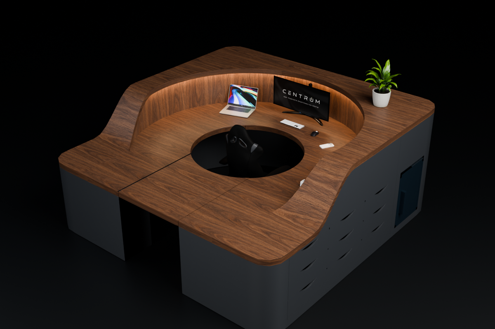
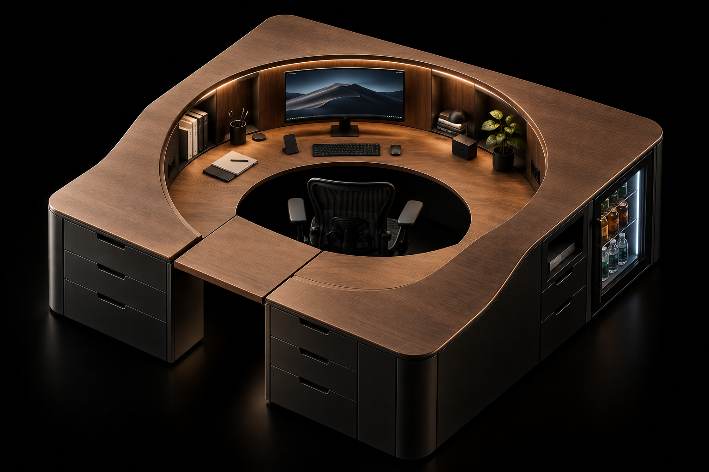
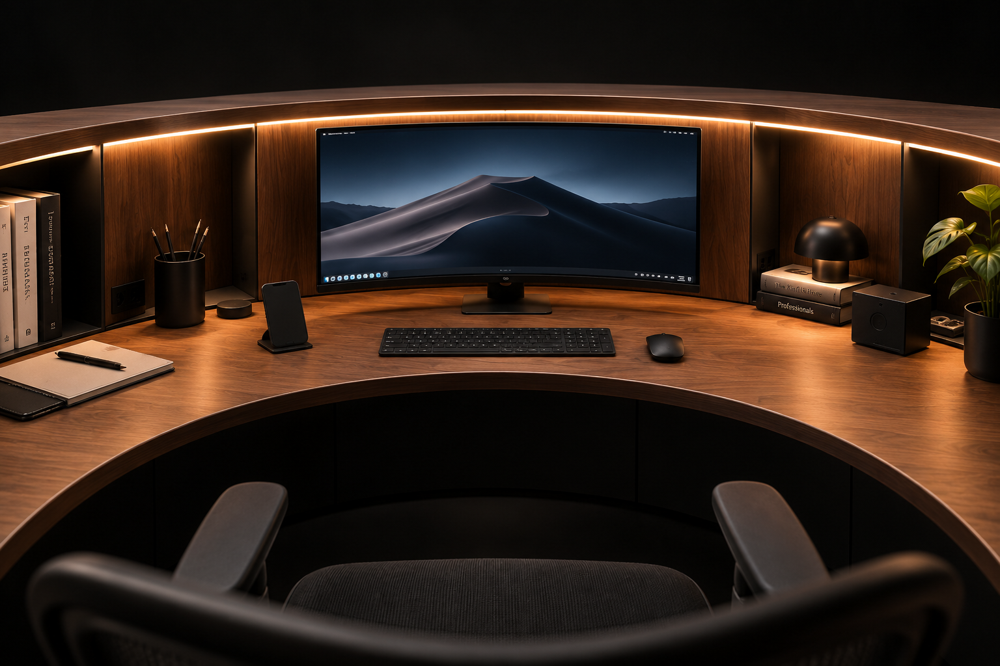
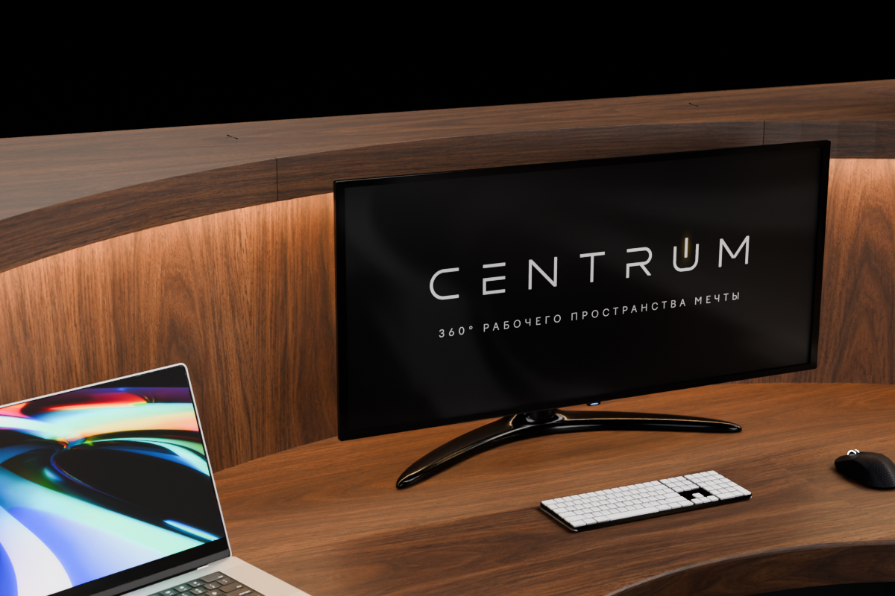

Tech Bay
Ниша под системный блок внутри корпуса: раздельные приточный и вытяжной тракты, кабельные трассы в теле стола, сервисный доступ без демонтажа рабочей поверхности. Компьютер — ваш, ниша к нему подготовлена.

Лимитированная партия · предзаказ открыт
CENTRUM V1 — кольцевая станция 2900 × 2900 мм. Компьютер, звук, свет, хранение и холодильник убраны внутрь корпуса. На виду остаётся дерево и пустая рабочая поверхность.
от 589 000 ₽ депозит 50% · старт продаж — вторая половина 2027
Наружный контур — скруглённый квадрат 2900 мм. Внутри — отверстие Ø1200, в котором находитесь вы и кресло. Всё остальное — пояс вокруг этого отверстия.

Обычный стол — прямая линия перед вами. Всё, что на ней не помещается, уезжает в стороны и за спину. Кольцо решает это геометрией, а не объёмом.

Внутренняя стенка идёт по радиусу 1250 мм от точки, где находится голова. Вместо того чтобы вставать, вы поворачиваетесь в кресле.
Рабочая поверхность на отметке 820 мм. Верхний ярус — 1270 мм, и уходит он не ступенькой, а плавным подъёмом на участке 600 мм. Монитор, книги и техника живут наверху; внизу остаётся 650 мм чистой глубины под руки.
Внутренняя кромка отверстия скруглена радиусом 8 мм. ANSI/HFES 100 допускает R2, но такой радиус только снимает порез и не распределяет давление; разборы контактного напряжения называют достаточным от R6. Взято 8 — с запасом. Кромка облицована не шпоном, а накладным бруском: шпон на таком валу вскрывается.
Кресло въезжает внутрь прямо, а не боком и не под углом. Опорной ножки в проходе нет.
Bridge
Подъёмная секция 793 × 1003 × 60 мм встаёт в проём с зазорами 3 и 4 мм и превращает кольцо в замкнутую петлю: рабочая поверхность идёт на все 360°. Открывается до упора на 100° и стоит у левой кромки входа. Петля и газлифт — отдельные узлы на чертежах 20–23.
Снаружи CENTRUM — деревянная поверхность и матово-чёрные фасады без ручек. Провода, компьютер, вентиляция, динамики и блоки питания живут в теле стола.
Ниша под системный блок внутри корпуса: раздельные приточный и вытяжной тракты, кабельные трассы в теле стола, сервисный доступ без демонтажа рабочей поверхности. Компьютер — ваш, ниша к нему подготовлена.
Ввод питания — в отдельном сухом электроотсеке.
LED-линия спрятана в пазу низа верхнего выступа и светит вниз, на рабочую поверхность. Самого источника из кресла не видно. Температура — 3000, 4000 или 6000 K, либо RGB. Опционально свет включается при открытии ящика.
Девять ящиков сеткой 3 × 3 на участке 1800 мм наружного фасада. Ровные фасады, тонкие зазоры, утопленные пальцевые вырезы — никаких выступающих ручек. В базе — три ящика, остальные добавляются в конфигураторе.
Модуль в углу фасада: стеклянная дверь, глубина 460 мм, высота 639 мм. Открывается снаружи кольца и не отнимает место у ног.
Мусорный модуль, Dock и Qi-площадки, вентиляционные каналы с обслуживанием, кабель-менеджмент по всем трассам, матово-чёрный корпус. Всё это входит в базу, а не докупается.


Пять динамиков спрятаны в вертикальной стенке между уровнями. Снаружи видны только круглые решётки Ø180 мм в цвет стенки. Колонок на столе нет.
Каждый динамик — в своей герметичной кассете 240 × 240 × 150 мм с отдельной камерой и демпфированием. Углы: L/R ±30°, центр 0°, тылы ±100° от направления на экран. Центры — на радиусе 1250 мм, на высоте 960 мм. Сабвуфер — отдельно на полу.
Дуга R1250 собирает звук обратно в ту же точку, где находится голова: путь ухо → стенка → ухо около 2530 мм, это ≈7,4 мс и гребёнка с шагом ≈137 Гц. На слух — «бочка» на средних, подкрашенный голос в микрофоне и лязг клавиатуры.
В пазу стенки — лента вертикальных поглощающих клиньев на 3323 мм дуги. Вершины через одну на разной глубине, чтобы не окрашивать одну частоту. Работает с 1,2 кГц: речь, свистящие, клавиатура, ранние отражения. Снимаются рукой на магнитах — без инструмента.
Акустическая обработка входит в базовую комплектацию. Система 5.1 — опция конфигуратора. Компоновка проработана на уровне проектного эскиза; перед серией собирается прототип и снимаются измерения.
Дерево задаёт характер, корпус всегда остаётся матово-чёрным — чтобы стол читался как объём, а не как мебельная стенка.

Кольцо, два уровня и Tech Bay не зависят от того, чем вы заняты. Меняются наполнение, электрика, свет и звук. Пресет — это стартовая точка, дальше всё правится в конфигураторе.
MAX-электрика, RGB-линия, скрытая акустика 5.1, Tech Bay под мощный ПК с раздельными трактами охлаждения.
Нейтральные 4000 K, максимум пустой поверхности, кронштейн под ультраширокий монитор, тихий контур охлаждения.
Акустическая обработка стенки, нижний ярус под клавиатуру и контроллеры, отдельные кабельные трассы под сигнальные линии.
Принтер на верхнем ярусе, вытяжной тракт корпуса, ящики под филамент и инструмент, дополнительные розетки.
Тёплый свет для просмотра, 5.1 для сведения, хранение под диски и карты, питание под рендер-станцию.
Соберите конфигурацию под себя: отделка, количество ящиков, электрика, свет, звук и кронштейн — с ценой в реальном времени.
Открыть конфигураторОтделка, ящики, электрика, свет, звук и кронштейн — в 3D и с ценой, которая пересчитывается на каждом шаге. Конфигурацию можно сохранить ссылкой и отправить заявку прямо отсюда.
Не открывается в этой рамке? Откройте конфигуратор на отдельной странице.
Предзаказ
Первая партия — 10 столов. Старт продаж — вторая половина 2027 года. Предзаказ фиксирует за вами место в партии и цену конфигурации на момент заявки.
Старт продаж запланирован на вторую половину 2027 года. Партия ограничена, места распределяются по очереди предзаказов.
Конструкция 2900 × 2900 мм, Bridge, холодильник, Tech Bay, мусорный модуль, базовая система хранения, кабель-менеджмент, вентиляция, Dock, Qi, LED-подсветка, акустическая обработка и матово-чёрный корпус.
Нет. Tech Bay — подготовленная ниша под ваш компьютер: вентиляция, трассы и сервисный доступ уже сделаны. Монитор покупается отдельно, скрытый кронштейн с кабельным маршрутом — опция конфигуратора.
Пятно изделия — 2900 × 2900 мм. К нему нужен подход со стороны входной секции, чтобы кресло въезжало в проход 800 мм.
Компоновка пяти каналов, объёмы кассет, углы и поглощающие клинья проработаны и прорисованы на листах 24–28. Это проектный эскиз: перед серией собирается прототип одного канала, снимается импульс и АЧХ, и только после этого паз режется на всю дугу.
50% от итоговой суммы собранной конфигурации. Условия окончательного расчёта обсуждаются лично до старта производства.